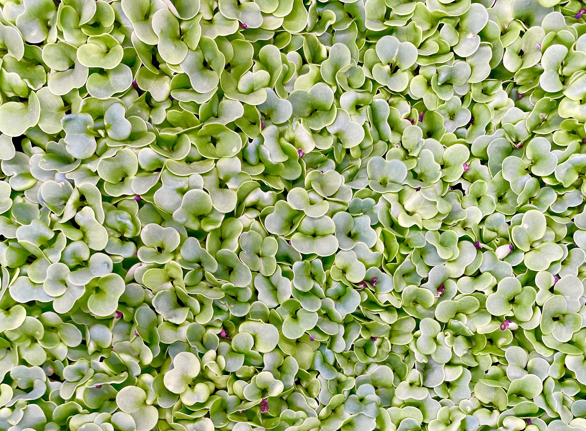
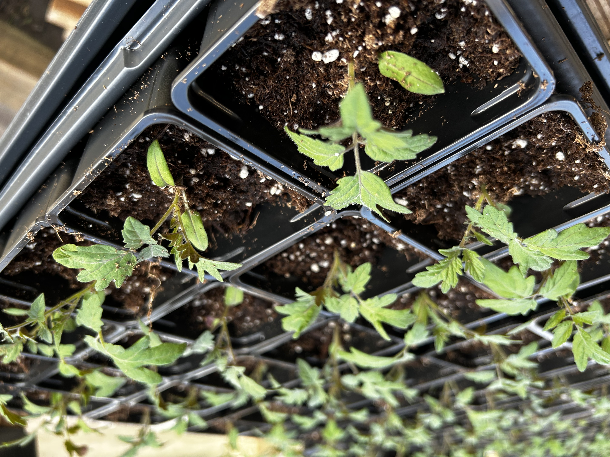

Farmstand
Most of the Plant Lab building is dedicated to growing space, but in the front room you'll find our farmstand. It's just like a roadside farmstand, except it's not along a road, and it's inside, and it operates year round . . . our farmstand is where our neighbors can pick up produce, garden seedlings, cut flowers, or other items available for purchase.
If you are a restaurant or other organization interested in bulk/wholesale, please inquire here.
CSA Shares
If you want to eat fresh local lettuce, microgreens, and herbs—and support Plant Lab as part of our neighborhood food system—our CSA greens share is for you. A greens share (or, as we like to call it, Garden Candy) will contain varying types of microgreens (like broccoli or radish mircros), shoots (like pea or buckwheat shoots), cooking greens (like kale or bok choy), and leaf lettuce varieties. We'll occasionally include herbs or other extras as we experiment with new things. We offer share options based on frequency and quantity, see options below.
Shares are packed for you to pickup at your convenience at the farmstand, which is typically open each week on Tuesday, Wednesday, and Thursday, 9am-9pm.
Share options: You select the number of items in your share (2, 3, or 4), and how often you'd like to pick up (every week, OR, twice a month—in the 1st and 3rd week).
- 2 Items : $10 per pickup
- 3 Items : $14.50 per pickup
- 4 Items : $19 per pickup
note: We bill monthly for the number of shares we deliver so some months will have 5 weekly shares. We also do take weeks off once in a while, and we don't charge for those weeks.
Sign up now! After you complete the form below, we will reach out to confirm your subscription and gather billing information.
Self-Service
Open Tuesday, Wednesday, Thursday 9am-9pm
In the front, there is a fridge setup for self-serve purchases. It's a great option if you aren't ready for a CSA committment or just want to try something new.

We'll have a variable selection of microgreens, lettuce, cooking greens, herbs, and flowers available.
How it works...
- Select items from the fridge. Availability will vary.
- Use the camera app on your smartphone to scan the QR code to access mobile checkout site.
- Checkout on your phone using the Square checkout site.
- You are done! Enjoy your greens!
Online Store
From time to time, Plant Lab will offer various plants, seeds, flowers, and other items for purchase or pre-order online. For example, garden seedlings will be available to pre-order online in late winter. You can find our online store here (you will be redirected to a third-party host). Inventory will vary by season and whatever we are experimenting with at the time.
Please note: Some items are pre-orders for pickup at later dates. Pre-orders or purchases are available for pickup at our farm in Holland. We do not ship or deliver items at this time. (If you are looking to order produce online for home delivery we do sell a small selection through Market Wagon, an online farmers' market.)
